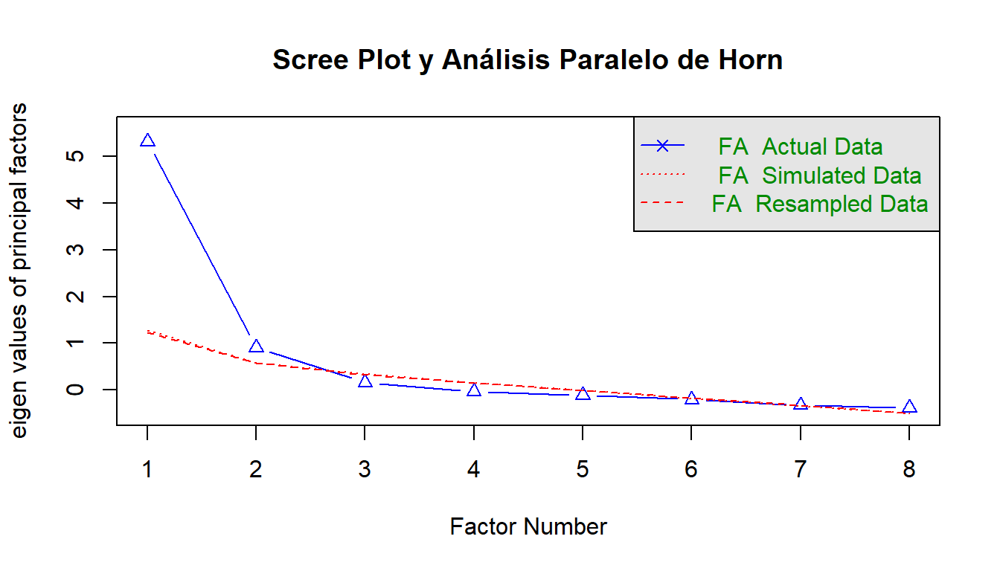
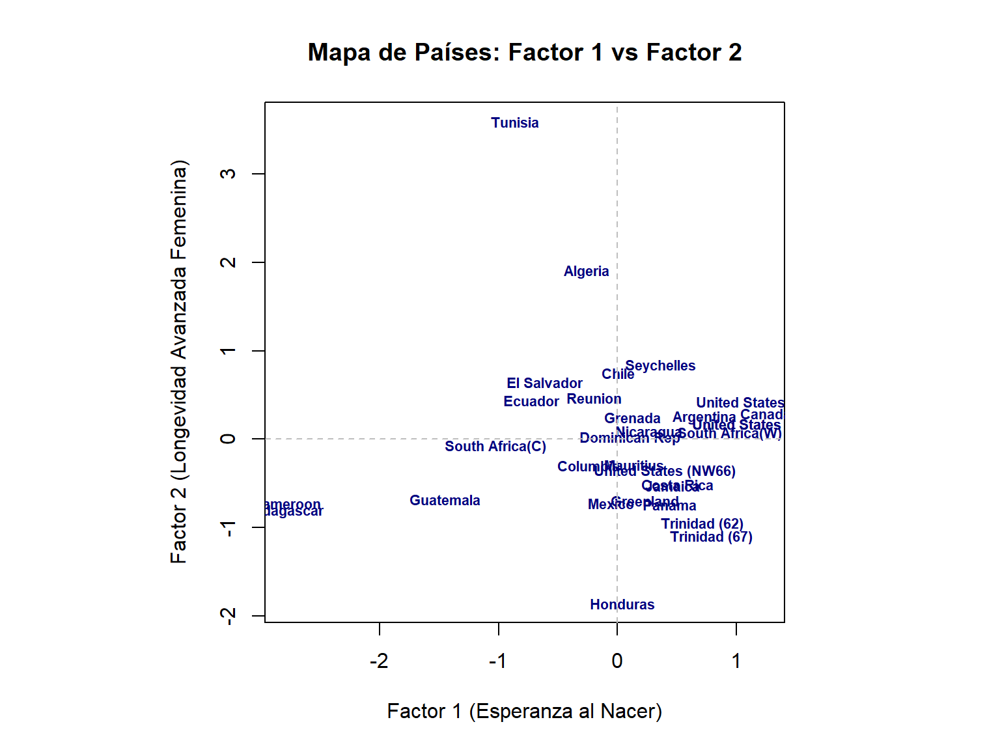
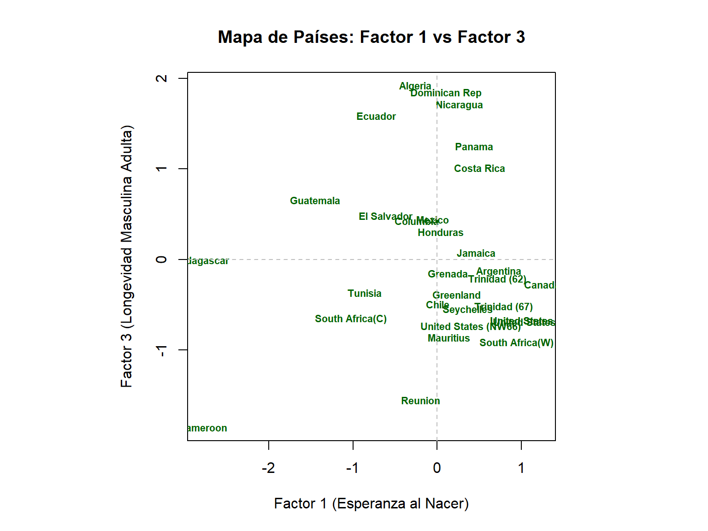
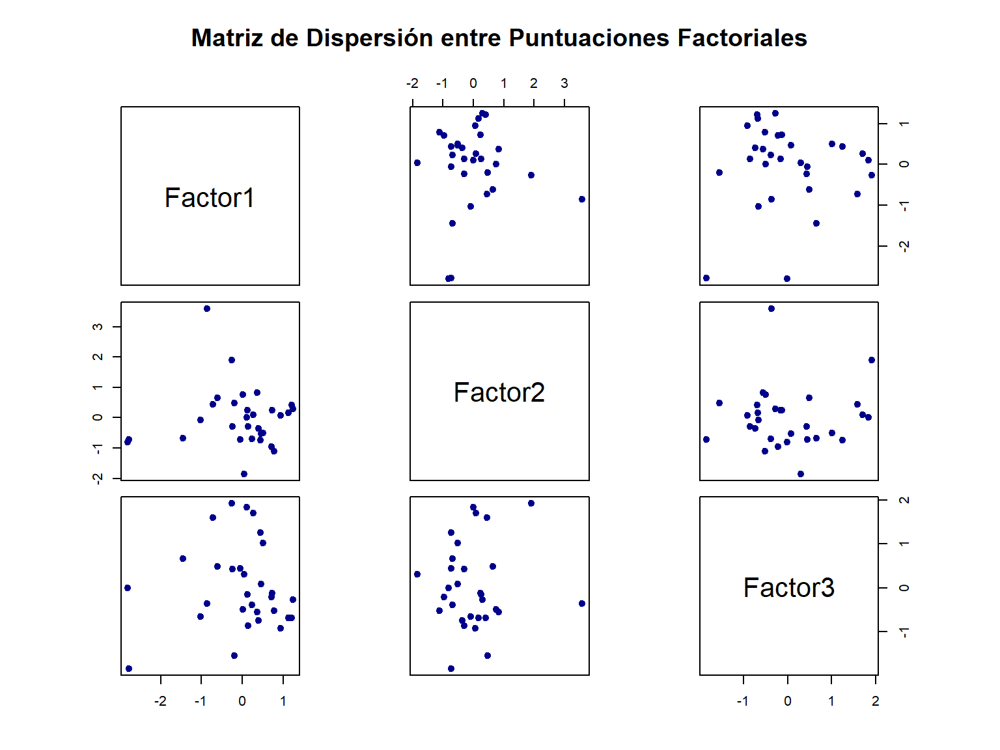
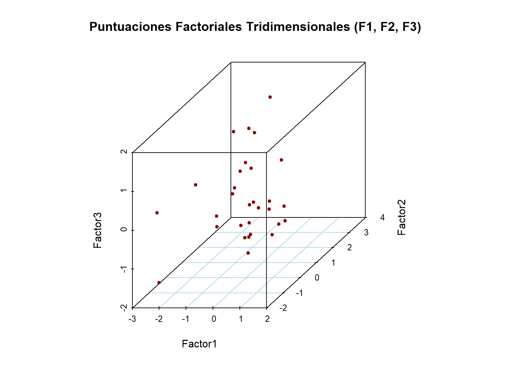

Capítulo 4 Análisis de Factores
4.1 Análisis Factorial
En numerosas áreas de Psicología y de Ciencias del Comportamiento no es posible medir directamente las variables que interesan; por ejemplo, los conceptos de inteligencia y de clase social. En estos casos es necesario recoger medidas indirectas que estén relacionadas con los conceptos que interesan. Las variables que interesan reciben el nombre de variables latentes y la metodología que las relaciona con variables observadas recibe el nombre de Análisis Factorial.
El modelo de Análisis Factorial es un modelo de regresión múltiple que relaciona variables latentes con variables observadas.
El Análisis Factorial tiene muchos puntos en común con el análisis de componentes principales, y busca esencialmente nuevas variables o factores que expliquen los datos. En el análisis de componentes principales, en realidad, sólo se hacen transformaciones ortogonales de las variables originales, haciendo hincapié en la varianza de las nuevas variables. En el análisis factorial, por el contrario, interesa más explicar la estructura de las covarianzas entre las variables.
Al igual que en el método de los componentes principales, para efectuar el análisis factorial, es necesario que las variables originales estén correlacionadas porque si lo estuvieran no habría nada que explicar de las variables.
Consideramos un conjunto de \(p\) variables observadas \(x=(x_1, x_2, \dots, x_p)\) que se asume relacionadas con un número dado de variables latentes \(f_1, f_2, \dots, f_k\), donde \(k < p\), mediante una relación del tipo:
\[x_1 = \lambda_{11}f_1 + \dots + \lambda_{1k}f_k + u_1\] \[\vdots\] \[x_p = \lambda_{p1}f_1 + \dots + \lambda_{pk}f_k + u_p\]
o de modo más conciso:
\[x = \Lambda f + u\]
donde
\[\Lambda = \begin{pmatrix} \lambda_{11} & \dots & \lambda_{1k} \\ \vdots & \dots & \vdots \\ \lambda_{p1} & \dots & \lambda_{pk} \end{pmatrix} \quad f = \begin{pmatrix} f_1 \\ \vdots \\ f_k \end{pmatrix} \quad u = \begin{pmatrix} u_1 \\ \vdots \\ u_p \end{pmatrix}\]
Los \(\lambda_{ij}\) son los pesos factoriales que muestran cómo cada \(x_i\) depende de factores comunes y se usan para interpretar los factores. Por ejemplo, valores altos relacionan un factor con la correspondiente variable observada y así se puede caracterizar cada factor.
Se asume que los términos residuales \(u_1, \dots, u_p\) no están correlacionados entre sí y con los factores \(f_1, \dots, f_k\). Cada variable \(u_i\) es particular para cada \(x_i\) y se denomina variable específica.
Dado que los factores no son observables, se puede fijar arbitrariamente su media en 0 y su varianza en 1, esto es, se consideran variables estandarizadas que son independientes entre sí, de modo que los pesos factoriales resultan ser las correlaciones entre las variables y los factores.
Así, con las suposiciones previas, la varianza de la variable \(x_i\) es:
\[\sigma_i^2 = \sum_{j=1}^{k} \lambda_{ij}^2 + \psi_i\]
donde \(\psi_i\) es la varianza de \(u_i\).
De este modo, la varianza de cada variable observada se puede descomponer en dos partes:
- La primera \(h_i^2\), denominada comunalidad, es:
\[h_i^2 = \sum_{j=1}^{k} \lambda_{ij}^2\]
y representa la varianza compartida con las otras variables por medio de los factores comunes.
- La segunda parte, \(\psi_i\), se denomina varianza específica y recoge la variabilidad no compartida con las otras variables.
La definición del modelo implica que la covarianza entre las variables \(x_i\) y \(x_j\) es:
\[\sigma_{ij} = \sum_{l=1}^{k} \lambda_{il} \lambda_{lj}\]
Las covarianzas no dependen en absoluto de las variables específicas, de hecho, basta con los factores comunes. De este modo, la matriz de covarianzas de las variables observadas es:
\[\Sigma = \Lambda \Lambda' + \Psi\]
donde \(\Psi\) es una matriz diagonal cuyos componentes son las varianzas específicas: \(\Psi = \text{diag}(\psi_i)\).
Lo contrario también se verifica: dada la descomposición de la varianza anterior, se puede encontrar un modelo factorial para las variables originales, \(x\), con \(k\) factores.
En la práctica se tienen que estimar los parámetros del modelo a partir de una muestra, de modo que el problema se centra en encontrar los valores \(\hat{\Lambda}\) y \(\hat{\Psi}\) tales que la matriz de covarianzas muestral \(S\) es aproximadamente:
\[S \approx \hat{\Lambda} \hat{\Lambda}' + \hat{\Psi}\]
Se tienen dos métodos de estimación de los términos anteriores: el método de los factores principales y el método de máxima verosimilitud.
4.1.1 Método de los factores principales
Es una técnica basada en valores y vectores propios, pero en lugar de operar sobre la matriz de covarianzas se opera sobre la llamada matriz de covarianzas reducida:
\[S^* = S - \hat{\Psi}\]
donde \(\hat{\Psi}\) es una matriz diagonal que contiene las estimas de \(\psi_i\).
Los elementos diagonales de \(S^*\) contienen las comunalidades estimadas (las partes de las varianzas de cada variable explicada por los factores comunes). Al contrario que el análisis de componentes principales, el análisis factorial no pretende recoger toda la varianza observada de los datos, sino la que comparten los factores comunes. De hecho, el análisis factorial se centra más en recoger las covarianzas o correlaciones que aparecen entre las variables originales.
El procedimiento es iterativo: se parte de unas comunalidades estimadas a partir de las correlaciones entre las variables observadas y luego se efectúa un análisis de componentes principales sobre la matriz \(S^*\).
4.1.2 Método de la máxima verosimilitud
Este método es el habitualmente preferido por los estadísticos. Asumiendo normalidad en los datos se define una distancia \(F\), entre la matriz de covarianzas observada y los valores predichos de esta matriz por el modelo del análisis factorial. La expresión de dicha distancia es:
\[F = \ln|\Lambda \Lambda' + \Psi| + \text{traza}\left(S(\Lambda \Lambda' + \Psi)^{-1}\right) - \ln|S| - p\]
Las estimaciones de los pesos factoriales se obtienen minimizando esta función, y esto es equivalente a maximizar la función de verosimilitud del modelo \(k\) factorial asumiendo normalidad.
4.2 AF Exploratorio (AFE) vs. AF Confirmatorio (AFC)
El Análisis Factorial se divide en dos enfoques metodológicos complementarios pero conceptualmente diferenciados: el Análisis Factorial Exploratorio (AFE) y el Análisis Factorial Confirmatorio (AFC).
La diferencia fundamental reside en la naturaleza del estudio (inductiva vs. deductiva), el grado de conocimiento teórico previo que posee el investigador y el nivel de restricciones impuestas sobre la matriz de cargas factoriales.
4.2.1 Análisis Factorial Exploratorio (AFE)
El AFE se utiliza principalmente en las fases iniciales de una investigación, cuando no se dispone de un modelo teórico rígido sobre la estructura latente que subyace a las variables observadas.
- Enfoque Inductivo: Los datos “hablan por sí mismos”. Se busca descubrir cuántos factores latentes existen y qué variables se agrupan en cada uno de ellos.
- Ausencia de Restricciones: Todas las variables observadas están vinculadas linealmente con todos los factores comunes. La matriz de cargas \(\mathbf{\Lambda}\) está completamente “libre” (todos los elementos \(\lambda_{ij}\) se estiman sin fijar valores a cero de forma a priori).
- Indeterminación de la Solución: La solución extraída no es única y requiere de rotaciones factoriales (ortogonales u oblicuas) para encontrar una Estructura Simple interpretable.
4.2.2 Análisis Factorial Confirmatorio (AFC)
El AFC se utiliza cuando existe un marco teórico consolidado, una evidencia empírica previa o un instrumento formalmente diseñado (ej. un cuestionario psicológico estructurado por dimensiones) y se desea contrastar si una hipótesis factorial específica se ajusta a los datos empíricos.
- Enfoque Deductivo: El investigador especifica a priori la arquitectura exacta del modelo: determina el número preciso de factores \(k\), qué variables específicas cargan en cada factor y qué factores están correlacionados entre sí.
- Presencia de Restricciones: Se imponen restricciones explícitas en la matriz de cargas factoriales. La mayoría de los elementos de \(\mathbf{\Lambda}\) se fijan estrictamente a cero (\(\lambda_{ij} = 0\)) para aquellas variables que teóricamente no pertenecen a determinado factor.
- Marco de Modelos de Ecuaciones Estructurales (SEM): El AFC no requiere rotación de factores. Se evalúa formalmente mediante el ajuste global del modelo comparando la matriz de covarianzas observada \(\mathbf{S}\) con la matriz implícita del modelo teorizado \(\mathbf{\Sigma}(\mathbf{\theta})\).
4.3 Diagnóstico de Factorabilidad
Antes de proceder a la extracción de factores en un Análisis Factorial Exploratorio (AFE), es indispensable evaluar empíricamente si la matriz de covarianzas o correlaciones muestrales posee la estructura requerida para ser factorizada. Si las variables originales estuviesen linealmente no correlacionadas, la matriz de correlaciones sería equivalente a una matriz identidad y no existirá varianza compartida que justifique la reducción dimensional.
Existen tres diagnósticos estadísticos principales para confirmar si el conjunto de datos es apto para el Análisis Factorial:
4.3.1 Prueba de Esfericidad de Bartlett
La Prueba de Esfericidad de Bartlett evalúa la hipótesis nula de que la matriz de correlaciones poblacional \(\mathbf{R}\) es una matriz identidad \(\mathbf{I}_p\), lo que indicaría que las variables no están correlacionadas entre sí:
\[H_0: \mathbf{R} = \mathbf{I}_p \quad \text{vs.} \quad H_1: \mathbf{R} \neq \mathbf{I}_p\]
El estadístico de prueba se calcula a partir del determinante de la matriz de correlación muestral \(|\mathbf{R}|\):
\[\chi^2 = -\left(n - 1 - \frac{2p + 5}{6}\right) \ln|\mathbf{R}|\]
donde \(n\) es el tamaño de la muestra y \(p\) es el número de variables observadas. Bajo \(H_0\), este estadístico se distribuye asintóticamente como una \(\chi^2\) con \(\frac{p(p-1)}{2}\) grados de libertad.
- Criterio de decisión: Se busca rechazar la hipótesis nula (\(p\text{-valor} < 0.05\)). Un \(p\text{-valor}\) estadísticamente significativo indica la existencia de correlaciones significativas entre las variables, justificando el uso del Análisis Factorial.
4.3.2 Medida de Adecuación Muestral KMO (Kaiser-Meyer-Olkin)
El índice KMO compara la magnitud de los coeficientes de correlación observados en relación con la magnitud de los coeficientes de correlación parcial. Su objetivo es determinar si la varianza de las variables estudiadas es susceptible de ser explicada por factores comunes:
\[\text{KMO} = \frac{\sum_{i \neq j} r_{ij}^2}{\sum_{i \neq j} r_{ij}^2 + \sum_{i \neq j} a_{ij}^2}\]
donde \(r_{ij}\) representa la correlación lineal simple entre las variables \(i\) y \(j\), y \(a_{ij}\) es la correlación parcial entre ambas controlando el efecto del resto de las variables observadas.
El índice KMO toma valores en el intervalo \([0, 1]\). La interpretación general de su magnitud sigue la escala propuesta por Kaiser:
| Valor de KMO | Evaluacion de la Factorabilidad |
|---|---|
| \(\text{KMO} \ge 0.90\) | Excelente (Marvelous) |
| \(0.80 \le \text{KMO} < 0.90\) | Buena (Meritorious) |
| \(0.70 \le \text{KMO} < 0.80\) | Aceptable (Middling) |
| \(0.60 \le \text{KMO} < 0.70\) | Mediocre (Mediocre) |
| \(0.50 \le \text{KMO} < 0.60\) | Mala / Inadecuada (Miserable) |
| \(\text{KMO} < 0.50\) | Inaceptable / Desaconsejada (Unacceptable) |
4.3.3 Matriz de Correlación Anti-imagen e Índices MSA Individuales
Además del valor global del KMO, es relevante evaluar el comportamiento individual de cada variable dentro del sistema. La matriz anti-imagen contiene los negativos de las correlaciones parciales entre pares de variables (\(a_{ij}\)).
La diagonal principal de esta matriz contiene los índices MSA (Measure of Sampling Adequacy) individuales para cada variable:
\[\text{MSA}_i = \frac{\sum_{j \neq i} r_{ij}^2}{\sum_{j \neq i} r_{ij}^2 + \sum_{j \neq i} a_{ij}^2}\]
- Criterio de decisión: Las variables con un \(\text{MSA}_i < 0.50\) deben ser identificadas y potencialmente eliminadas del análisis una a una, ya que no comparten la suficiente varianza común con el resto del conjunto de variables observadas.
4.3.4 Ejemplo de Diagnostico en R
En R, estos diagnósticos se pueden calcular mediante las funciones del paquete psych.
Chisq Bartlett: 372.3232
ert{} p-valor: 7.881036e-62 KMO Global: 0.7940621 | Variable | MSA_Individual | |
|---|---|---|
| m0 | m0 | 0.6940451 |
| m25 | m25 | 0.9046691 |
| m50 | m50 | 0.7785904 |
| m75 | m75 | 0.8612358 |
| w0 | w0 | 0.6751284 |
| w25 | w25 | 0.8352990 |
| w50 | w50 | 0.8568237 |
| w75 | w75 | 0.8306269 |
4.4 Estimación del Número de Factores
El hecho de tomar un número adecuado de factores \(k\) para representar las covarianzas observadas es una de las decisiones más críticas en el Análisis Factorial Exploratorio. Seleccionar un número insuficiente de factores (\(k\) subestimado) fuerza a comprimir varianza explicativa relevante, distorsionando las cargas factoriales. Por el contrario, un número excesivo de factores (\(k\) sobreestimado) puede derivar en la extracción de factores con poca significación teórica o compuestos por varianza de error. Observe el contraste con el método de componentes principales, donde los primeros \(k\) componentes son siempre iguales.
Una ventaja del método de máxima verosimilitud es que lleva asociado un test estadístico para estimar el número de factores.
En la práctica estadística se recomienda no confiar en una sola regla, sino combinar diversos criterios cuantitativos y gráficos:
4.4.1 Criterio de Kaiser-Guttman (Autovalores Mayor a 1)
Es la regla heurística más conocida y extendida. Se basa en la matriz de correlación \(\mathbf{R}\) e indica que solo deben conservarse aquellos factores cuyo autovalor asociado sea mayor que la unidad:
\[\lambda_j > 1 \quad \text{para } j = 1, \dots, k\]
- Fundamento: Dado que las variables observadas están estandarizadas (con varianza individual igual a 1), un factor común solo merece ser retenido si es capaz de explicar, al menos, la misma cantidad de varianza que una sola variable observada.
- Limitación: Tiende a sobreestimar el número real de factores cuando el número de variables es grande (\(p > 30\)) o cuando las comunalidades de las variables son bajas.
4.4.2 Gráfico de Sedimentación (Scree Plot de Cattell)
El Gráfico de Sedimentación es una representación gráfica cartesiana donde se ordenan de mayor a menor los autovalores \(\lambda_j\) frente al índice ordinal de los factores \(j\).
- Criterio de decisión: Se observa el gráfico buscando el punto de inflexión o “codo” (elbow), a partir del cual la pendiente de la curva disminuye drásticamente y los autovalores subsecuentes adoptan un comportamiento casi lineal y plano (asimilable al “derrubio” o sedimentos al pie de una montaña). Se retienen únicamente los factores situados por encima del punto de inflexión.
4.4.3 Análisis Paralelo de Horn (Horn’s Parallel Analysis)
El Análisis Paralelo es considerado por la literatura metodológica moderna como el criterio empírico más preciso y robusto para determinar \(k\).
- Procedimiento:
- Genera múltiples matrices de datos aleatorios e independientes con el mismo tamaño muestral (\(n\)) y el mismo número de variables (\(p\)) que la base de datos original.
- Calcula los autovalores de la matriz de correlación para cada conjunto de datos simulados y obtiene sus promedios (o percentiles 95).
- Compara los autovalores reales observados en la muestra original con los autovalores aleatorios generados.
- Criterio de decisión: Se retienen únicamente aquellos factores cuyos autovalores observados sean estrictamente mayores que los autovalores promedio generados aleatoriamente por azar.
4.4.4 Prueba de Hipótesis de Bondad de Ajuste (\(\chi^2\) por MLE)
Cuando el Análisis Factorial se estima mediante el método de Máxima Verosimilitud (MLE), es posible contrastar formalmente la hipótesis nula de que una solución con \(k\) factores es suficiente para explicar la matriz de covarianzas poblacional:
\[H_0: \mathbf{\Sigma} = \mathbf{\Lambda}\mathbf{\Lambda}' + \mathbf{\Psi} \quad \text{con } k \text{ factores}[cite: 1]\]
El estadístico de prueba sigue una distribución Chi-cuadrado:
\[\chi^2 = \left(n - 1 - \frac{2p + 5}{6} - \frac{2k}{3}\right) F_{\text{MLE}}\]
con \(\text{gl} = \frac{(p - k)^2 - (p + k)}{2}\) grados de libertad.
- Criterio de decisión: Si el \(p\text{-valor} \ge 0.05\), no se rechaza \(H_0\), lo que implica que \(k\) factores son estadísticamente suficientes para reproducir la estructura de covarianzas muestrales.
4.4.5 Ejemplo de Aplicación en R
Para ejecutar de forma integrada estos criterios en R, utilizaremos el paquete psych.

Figura 4.1: Gráfico de Sedimentación y Análisis Paralelo de Horn
Parallel analysis suggests that the number of factors = 2 and the number of components = NA | Criterio | Numero.de.Factores.Sugerido | Observación…p.valor |
|---|---|---|
| Kaiser-Guttman (lambda > 1) | 2 | Retiene autovalores > 1 |
| Análisis Paralelo de Horn | 2 | Basado en simulación Monte Carlo |
| Prueba chi^2 por MLE (3 factores) | 3 | p-valor = 0.458 (Suficiente) |
4.5 Rotación de los Factores
En el Análisis Factorial no existe una solución única para determinar la matriz de pesos, de hecho, se puede multiplicar por una matriz ortogonal \(M\) de orden \(k \times k\) de modo que:
\[x = \Lambda f + u = (\Lambda M)(M' f) + u\]
y este nuevo modelo verifica las mismas propiedades que el anterior: tiene como factores \(f^* = M'f\) y como matriz de pesos \(\Lambda M\). En este caso, la matriz de covarianzas de las variables originales es:
\[\Sigma = (\Lambda M)(\Lambda M)' + \Psi\]
que como \(MM' = I\) se reduce a que \(\Sigma = \Lambda \Lambda' + \Psi\) como antes; de este modo se explica de manera equivalente la matriz de covarianzas de las variables originales.
Puede ser que la solución sea más interpretable mediante el uso de alguna matriz ortogonal, lo que lleva al concepto de rotación de los factores. Según Thurstone, la intención fundamental al realizar una rotación es encontrar una estructura simple. Las propiedades que debe cumplir son:
- Cada fila de la matriz factorial de pesos debe contener, al menos, un cero.
- Cada columna de la matriz factorial de pesos debe contener, al menos, \(k\) ceros.
- Cada par de columnas de la matriz factorial de pesos debe contener varias variables cuyos pesos sean nulos en una columna pero no en la otra.
- Si hay más de cuatro factores, cada par de columnas de la matriz factorial de pesos debe contener un número elevado de variables con pesos nulos en ambas columnas.
- De manera recíproca, si hay más de cuatro factores, en cada par de columnas de la matriz factorial de pesos sólo un número pequeño de variables debe contener pesos no nulos.
Cuando se consigue una estructura simple, las variables observadas se encuentran en grupos mutuamente excluyentes de modo que los pesos son altos en unos pocos factores y bajos en el resto.
4.5.1 Tipos de rotaciones
Hay dos posibles tipos de rotaciones: ortogonales y oblicuas.
La ventaja principal de las rotaciones ortogonales es su simplicidad, ya que los pesos representan las correlaciones entre los factores y las variables, sin embargo esto no se cumple en el caso de las rotaciones oblicuas. Entre las rotaciones ortogonales se encuentran dos tipos principales:
- Rotación Varimax: Fue propuesta por Kaiser (1958), y trata de que los factores tengan unas pocas saturaciones altas y muchas casi nulas en las variables. Esto hace que haya factores con correlaciones altas con un número pequeño de variables y correlaciones nulas en el resto, quedando así redistribuida la varianza de los factores.
- Rotación Cuartimax: Trata que una variable dada esté muy correlacionada con un factor y muy poco correlacionada con el resto de factores. Se usa menos frecuentemente que la anterior.
Entre las rotaciones oblicuas, la más empleada es:
- Rotación Oblimín: Trata de encontrar una estructura simple sin que importe el hecho de que las rotaciones sean ortogonales, esto es, las saturaciones no representan ya las correlaciones entre los factores y las variables. Se considera un parámetro que controla el grado de correlación entre los factores, con valores preferentemente entre \(-0{,}5\) y \(0{,}5\).
4.5.2 Matriz de Patrón vs. Matriz de Estructura (Rotaciones Oblicuas)
En el Análisis Factorial Exploratorio, la distinción entre la Matriz de Patrón (Pattern Matrix) y la Matriz de Estructura (Structure Matrix) surge exclusivamente cuando se aplican rotaciones oblicuas.
Cuando se utiliza una rotación ortogonal (como Varimax), los factores se mantienen estrictamente independientes entre sí (\(\text{Cov}(f_i, f_j) = 0\)). En este caso particular, la Matriz de Patrón y la Matriz de Estructura son idénticas, y sus elementos (\(\lambda_{ij}\)) representan simultáneamente la relación directa y la correlación total entre la variable observada \(i\) y el factor \(j\).
Sin embargo, en las rotaciones oblicuas los factores latentes pueden estar correlacionados entre sí (\(\text{Cov}(f_i, f_j) = \phi_{ij} \neq 0\)). Esta correlación entre factores exige descomponer la relación entre las variables y los factores en dos matrices diferenciadas:
1. Matriz de Patrón (Pattern Matrix)
La Matriz de Patrón \(\mathbf{\Lambda}\) contiene los coeficientes de regresión estandarizados o efectos directos de cada factor latente sobre cada variable observada, controlando la presencia y el efecto del resto de los factores comunes.
El modelo lineal factorial para la variable \(x_i\) viene dado por:
\[x_i = \lambda_{i1} f_1 + \lambda_{i2} f_2 + \dots + \lambda_{ik} f_k + u_i\][cite: 1]
- Propiedad clave: Los coeficientes \(\lambda_{ij}\) de esta matriz corresponden a las saturaciones o cargas factoriales puras.
- Uso principal: Es la matriz fundamental para la interpretación y denominación teórica de los factores, ya que muestra el aporte único y no redundante que hace cada factor sobre la variable observada.
2. Matriz de Estructura (Structure Matrix)
La Matriz de Estructura \(\mathbf{S}_F\) contiene las correlaciones simples totales entre las variables observadas y los factores comunes.
Matricialmente, se calcula multiplicando la Matriz de Patrón \(\mathbf{\Lambda}\) por la matriz de correlaciones inter-factoriales \(\mathbf{\Phi} = \text{Cov}(\mathbf{f})\):
\[\mathbf{S}_F = \mathbf{\Lambda} \mathbf{\Phi}\]
Para una variable \(i\) y un factor \(j\), el elemento de la matriz de estructura se expresa como:
\[s_{ij} = \text{Corr}(x_i, f_j) = \lambda_{ij} + \sum_{m \neq j} \lambda_{im} \phi_{mj}\]
- Propiedad clave: Incorpora tanto el efecto directo del factor \(j\) sobre la variable \(i\) como los efectos indirectos compartidos a través de la correlación de \(j\) con otros factores (\(\phi_{mj}\)).
- Uso principal: Permite evaluar la asociación total entre una variable y un factor. Si la correlación entre factores es nula (\(\mathbf{\Phi} = \mathbf{I}\)), \(\mathbf{S}_F = \mathbf{\Lambda}\).
3. Matriz de Correlación entre Factores (\(\mathbf{\Phi}\))
Acompañando a las matrices de patrón y estructura, las rotaciones oblicuas devuelven la matriz de correlación entre los factores estandarizados (\(\mathbf{\Phi}\)):
\[\mathbf{\Phi} = \begin{pmatrix} 1 & \phi_{12} & \dots & \phi_{1k} \\ \phi_{21} & 1 & \dots & \phi_{2k} \\ \vdots & \vdots & \ddots & \vdots \\ \phi_{k1} & \phi_{k2} & \dots & 1 \end{pmatrix}\]
- Si los valores fuera de la diagonal (\(\phi_{ij}\)) son próximos a cero (\(|\phi_{ij}| < 0.20\)), se confirma que una rotación ortogonal (Varimax) habría sido suficiente y preferible por simplicidad parsimoniosa.
- Si los factores muestran correlaciones moderadas o altas (\(|\phi_{ij}| \ge 0.32\)), la rotación oblicua es metodológicamente obligatoria, y la Matriz de Patrón debe utilizarse para interpretar los factores.
4.5.3 Ejemplo de Implementacion y Comparacion en R
En R, podemos obtener ambas matrices realizando una rotación oblicua (ej. oblimin o promax) utilizando el paquete psych.
| ML2 | ML3 | ML1 | |
|---|---|---|---|
| m0 | 0.964 | 0.128 | -0.100 |
| m25 | 0.529 | 0.443 | -0.091 |
| m50 | 0.138 | 0.885 | 0.005 |
| m75 | -0.213 | 0.695 | 0.323 |
| w0 | 1.017 | -0.102 | 0.080 |
| w25 | 0.670 | 0.120 | 0.415 |
| w50 | 0.367 | 0.216 | 0.616 |
| w75 | -0.018 | 0.059 | 0.892 |
| ML2 | ML3 | ML1 | |
|---|---|---|---|
| m0 | 0.993 | 0.562 | 0.340 |
| m25 | 0.723 | 0.658 | 0.386 |
| m50 | 0.596 | 0.959 | 0.615 |
| m75 | 0.266 | 0.789 | 0.682 |
| w0 | 0.995 | 0.473 | 0.395 |
| w25 | 0.887 | 0.728 | 0.740 |
| w50 | 0.709 | 0.794 | 0.889 |
| w75 | 0.345 | 0.614 | 0.923 |
| ML2 | ML3 | ML1 | |
|---|---|---|---|
| ML2 | 1.000 | 0.516 | 0.373 |
| ML3 | 0.516 | 1.000 | 0.631 |
| ML1 | 0.373 | 0.631 | 1.000 |
En cualquier caso, el hecho de rotar los factores siempre es controvertido ya que se pueden elegir los ejes que resulten de mayor conveniencia. Sin embargo, se puede considerar que una rotación es sólo un medio para conseguir unos ejes que permitan describir los puntos de la muestra de la manera más simple posible.
4.6 Ejemplos
4.6.1 Ejemplo 1 Esperanza de Vida en 31 Países
Para ilustrar de forma completa la aplicación del Análisis Factorial Exploratorio (AFE), utilizaremos el conjunto de datos clásico de Keyfitz y Flieger (1971) relativo a la esperanza de vida en 31 países según sexo y rango de edad:
| País / Región | m0 | m25 | m50 | m75 | w0 | w25 | w50 | w75 |
|---|---|---|---|---|---|---|---|---|
| Algeria | 63.00 | 51.00 | 30.00 | 13.00 | 67.00 | 54.00 | 34.00 | 15.00 |
| Cameroon | 34.00 | 29.00 | 13.00 | 5.00 | 38.00 | 32.00 | 17.00 | 6.00 |
| Madagascar | 38.00 | 30.00 | 17.00 | 7.00 | 38.00 | 34.00 | 20.00 | 7.00 |
| Mauritius | 59.00 | 42.00 | 20.00 | 6.00 | 64.00 | 46.00 | 25.00 | 8.00 |
| Reunion | 56.00 | 38.00 | 18.00 | 7.00 | 62.00 | 46.00 | 25.00 | 10.00 |
| Seychelles | 62.00 | 44.00 | 24.00 | 7.00 | 69.00 | 50.00 | 28.00 | 14.00 |
| South Africa(C) | 50.00 | 39.00 | 20.00 | 7.00 | 55.00 | 43.00 | 23.00 | 8.00 |
| South Africa(W) | 65.00 | 44.00 | 22.00 | 7.00 | 72.00 | 50.00 | 27.00 | 9.00 |
| Tunisia | 56.00 | 46.00 | 24.00 | 11.00 | 63.00 | 54.00 | 33.00 | 19.00 |
| Canada | 69.00 | 47.00 | 24.00 | 8.00 | 75.00 | 53.00 | 29.00 | 10.00 |
| Costa Rica | 65.00 | 48.00 | 26.00 | 9.00 | 68.00 | 50.00 | 27.00 | 10.00 |
| Dominican Rep | 64.00 | 50.00 | 28.00 | 11.00 | 66.00 | 51.00 | 29.00 | 11.00 |
| El Salvador | 56.00 | 44.00 | 25.00 | 10.00 | 61.00 | 48.00 | 27.00 | 12.00 |
| Greenland | 60.00 | 44.00 | 22.00 | 6.00 | 65.00 | 45.00 | 25.00 | 9.00 |
| Grenada | 61.00 | 45.00 | 22.00 | 8.00 | 65.00 | 49.00 | 27.00 | 10.00 |
| Guatemala | 49.00 | 40.00 | 22.00 | 9.00 | 51.00 | 41.00 | 23.00 | 8.00 |
| Honduras | 59.00 | 42.00 | 22.00 | 6.00 | 61.00 | 43.00 | 22.00 | 7.00 |
| Jamaica | 63.00 | 44.00 | 23.00 | 8.00 | 67.00 | 48.00 | 26.00 | 9.00 |
| Mexico | 59.00 | 44.00 | 24.00 | 8.00 | 63.00 | 46.00 | 25.00 | 8.00 |
| Nicaragua | 65.00 | 48.00 | 28.00 | 14.00 | 68.00 | 51.00 | 29.00 | 13.00 |
| Panama | 65.00 | 48.00 | 26.00 | 9.00 | 67.00 | 49.00 | 27.00 | 10.00 |
| Trinidad (62) | 64.00 | 63.00 | 21.00 | 7.00 | 68.00 | 47.00 | 25.00 | 9.00 |
| Trinidad (67) | 64.00 | 43.00 | 21.00 | 6.00 | 68.00 | 47.00 | 24.00 | 8.00 |
| United States (66) | 67.00 | 45.00 | 23.00 | 8.00 | 74.00 | 51.00 | 28.00 | 10.00 |
| United States (NW66) | 61.00 | 40.00 | 21.00 | 10.00 | 67.00 | 46.00 | 25.00 | 11.00 |
| United States (W66) | 68.00 | 46.00 | 23.00 | 8.00 | 75.00 | 52.00 | 29.00 | 10.00 |
| United States (67) | 67.00 | 45.00 | 23.00 | 8.00 | 74.00 | 51.00 | 28.00 | 10.00 |
| Argentina | 65.00 | 46.00 | 24.00 | 9.00 | 71.00 | 51.00 | 28.00 | 10.00 |
| Chile | 59.00 | 43.00 | 23.00 | 10.00 | 66.00 | 49.00 | 27.00 | 12.00 |
| Columbia | 58.00 | 44.00 | 24.00 | 9.00 | 62.00 | 47.00 | 25.00 | 10.00 |
| Ecuador | 57.00 | 46.00 | 28.00 | 9.00 | 60.00 | 49.00 | 28.00 | 11.00 |
--- DIAGNÓSTICOS DE FACTORABILIDAD ---Prueba de Bartlett (Chi2): 372.323
ert{} p-valor: 7.881036e-62 Medida KMO Global: 0.794 | Factores | Chi_Cuadrado | GL | p_valor |
|---|---|---|---|
| 1 | 163.112 | 20 | 0.0000 |
| 2 | 45.236 | 13 | 0.0000 |
| 3 | 6.727 | 7 | 0.4578 |
| Factor1 | Factor2 | Factor3 | Comunalidad | Unicidad | |
|---|---|---|---|---|---|
| m0 | 0.964 | 0.122 | 0.226 | 0.995 | 0.005 |
| m25 | 0.646 | 0.169 | 0.438 | 0.638 | 0.362 |
| m50 | 0.430 | 0.354 | 0.790 | 0.934 | 0.066 |
| m75 | 0.080 | 0.525 | 0.656 | 0.712 | 0.288 |
| w0 | 0.970 | 0.217 | 0.081 | 0.995 | 0.005 |
| w25 | 0.764 | 0.556 | 0.310 | 0.989 | 0.011 |
| w50 | 0.536 | 0.729 | 0.401 | 0.980 | 0.020 |
| w75 | 0.156 | 0.867 | 0.280 | 0.854 | 0.146 |




4.6.2 Ejemplo 2 de Implementación del AFC en R (lavaan)
A diferencia del AFE estimado previamente con factanal() o psych::fa(), el AFC se especifica definiendo sintácticamente la estructura teórica mediante el paquete lavaan (Latent Variable Analysis).
| Indice.de.Ajuste | Valor.Obtención | Criterio.Deseable |
|---|---|---|
| chisq | 153.162 | - |
| df | 19.000 | - |
| pvalue | 0.000 | > 0.05 |
| cfi | 0.671 | > 0.95 |
| tli | 0.515 | > 0.95 |
| rmsea | 0.477 | < 0.06 |
| srmr | 0.134 | < 0.08 |